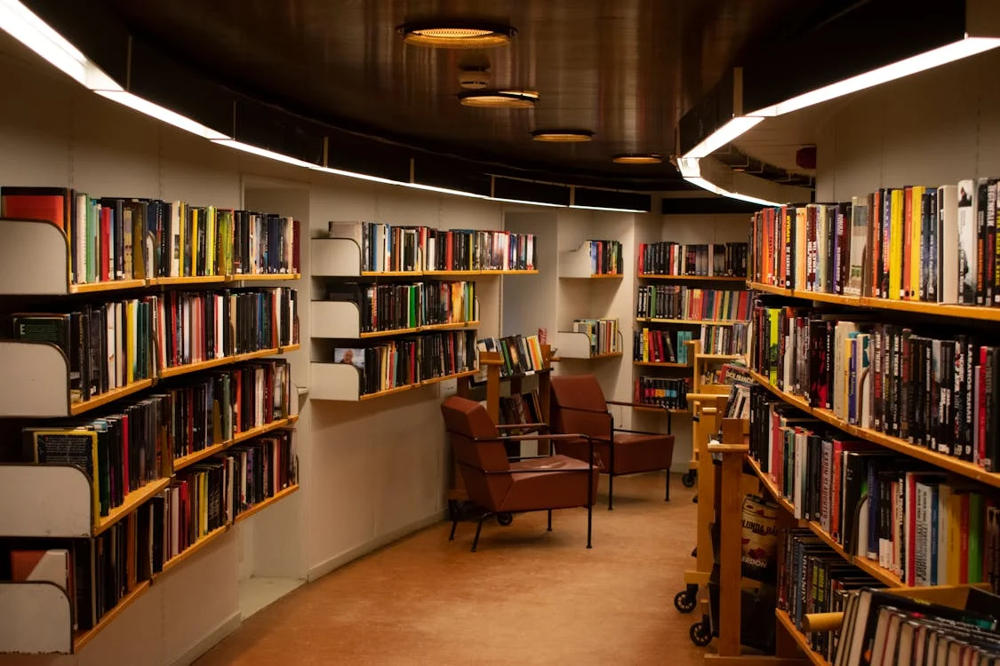

Projeler
Belediye Hizmet Binası
Akıllı Atık Yönetim Sistemi
Akıllı Aydınlatma
Projesi

Halk Bahçeleri ve Toplum Parkları
Gençlik Kafesi

Belediye Hizmet Binası Projesi, vatandaşlara daha iyi ve hızlı hizmet sunmak amacıyla hayata geçirilmiştir. Modern mimari tasarımı ve son teknoloji altyapısı ile dikkat çeken bu bina, belediye hizmetlerinin tek çatı altında toplandığı bir merkez olacaktır.
Akıllı Atık Yönetim Sistemi Projesi, şehirdeki atık toplama süreçlerini optimize etmek ve geri dönüşüm oranlarını artırmak amacıyla hayata geçirilmiştir. Bu sistem, sensörler ve IoT teknolojileri kullanarak atık kutularının doluluk oranlarını takip eder ve toplama işlemlerini daha verimli hale getirir.
Akıllı Aydınlatma Sistemi Projesi, şehir genelinde enerji tasarrufu sağlamak ve aydınlatma hizmetlerini daha verimli hale getirmek amacıyla hayata geçirilmiştir. Bu sistem, sensörler ve IoT teknolojileri kullanarak aydınlatma ihtiyaçlarını optimize eder ve gereksiz enerji tüketimini azaltır.
Halk Bahçeleri ve Toplum Parkları Projesi, şehir sakinlerinin doğayla iç içe zaman geçirebileceği, dinlenebileceği ve spor yapabileceği alanlar oluşturmayı hedefler. Bu projenin amacı, kent yaşamında yeşil alanların artırılması ve halkın refahını artırmaktır.
Gençlik Kafesi Projesi, gençler için sosyal bir buluşma ve etkileşim noktası olarak tasarlanmıştır. Bu proje, gençlerin bir araya gelip sosyalleşebileceği, kültürel etkinliklere katılabileceği ve eğlenceli vakit geçirebileceği bir ortam sunmayı amaçlar.
Şehir Kütüphanesi Projesi, şehir sakinlerine geniş bir kitap koleksiyonu ve kültürel etkinlikler sunan bir merkez olarak tasarlanmıştır. Bu proje, bilgiye erişimi kolaylaştırmak, okuma alışkanlığını teşvik etmek ve toplumun bilgi düzeyini artırmak amacıyla kurulmuştur.